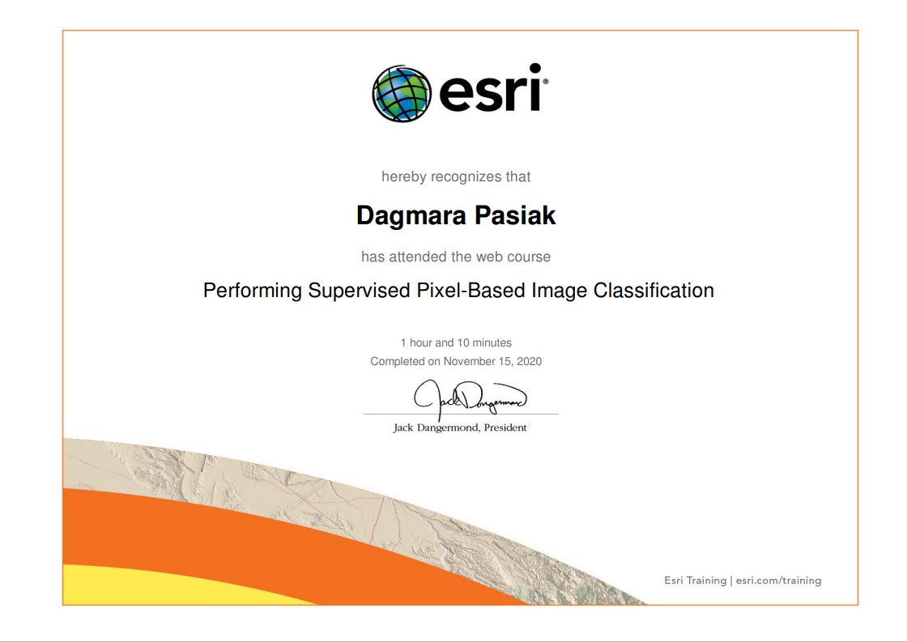
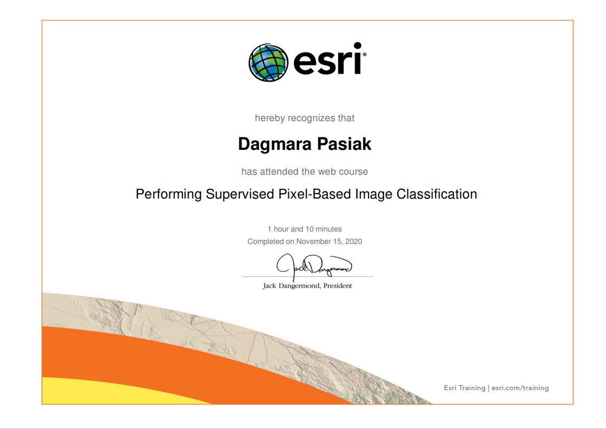
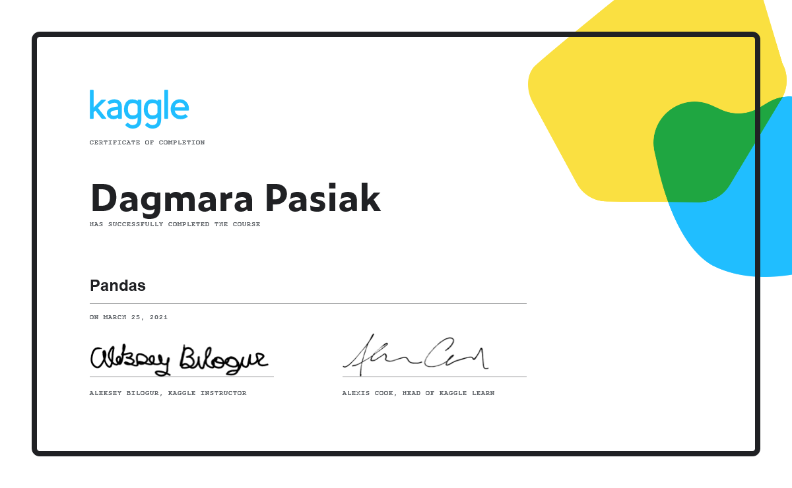
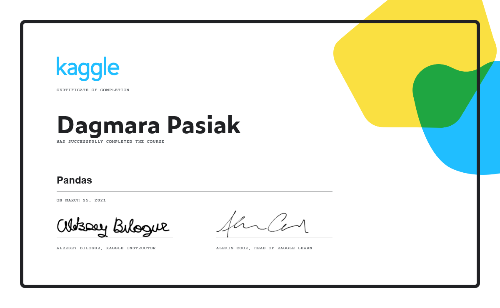
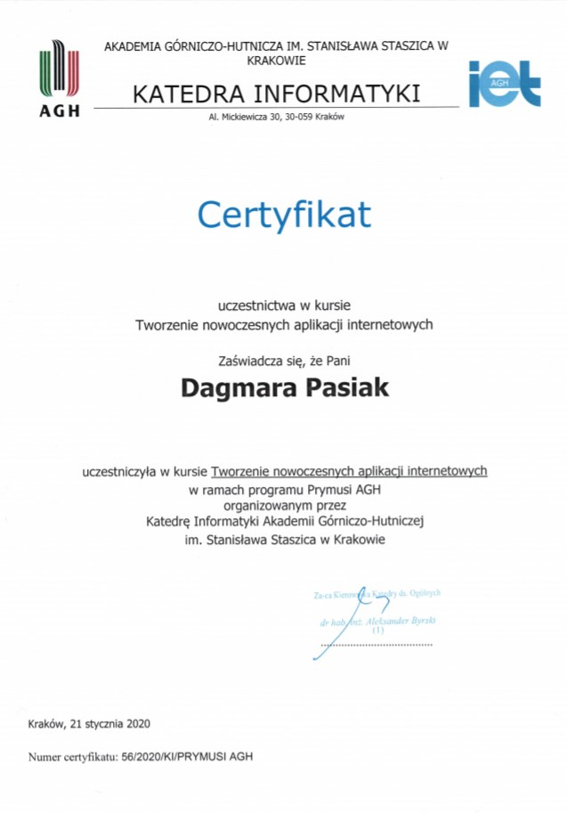
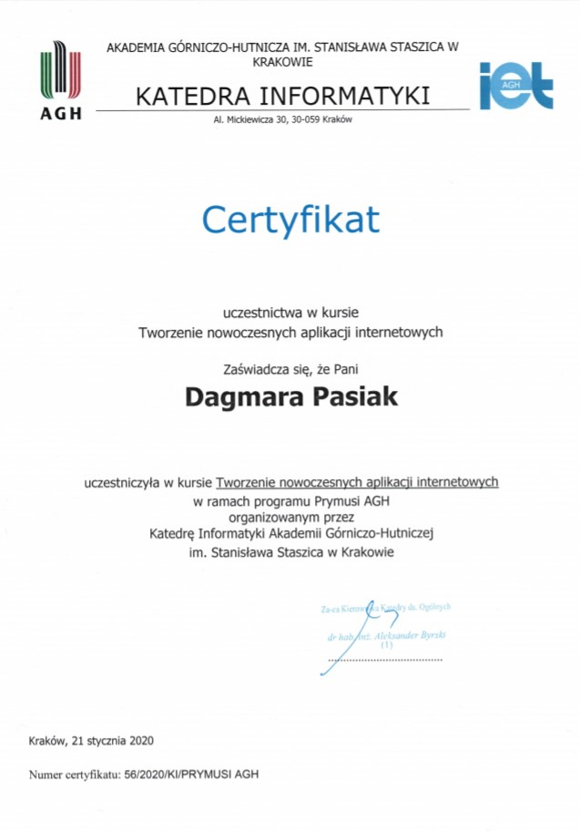

Passion for maps, data analysis, environment and traveling has resulted in choosing Geoinformatics as a field of my development. For a couple of years I have been eager to learn new technologies that enable me to create modern geospatial products with implications in the real world. Some of the presented projects were created as a part of assignments during my studies, while the others are for my personal use. Below there is also a set of certificates that presents process of my development over the years. My goal for the future is to not only use available solutions, but also to contribute to the geospatial community with my own ideas.
Collection of projects

Longitude:
Latitude:
0 km
Norway 2021
Using recorded GPS Track and photos from the journey I visualized memories from the great road trip across Norway. Map was created using Mapbox GL JS and Turf.js libraries with data imported from GeoJSON file that contains coordinates of taken photos, name of the place and a file name. Rendered track is updated in real-time as it was suggested in this Mapbox example.
I used Turf function that returns the closest point on the line to show images at the moment the path gets closer. Before visualization process there is a new GeoJSON created that contains corresponding point on the GPS Track and information about real point. Once the path is being rendered there is a comparison if there is any new photo to display on the way. During presentation it is also possible to adjust map zoom level and position if you want to explore some places in details. Pins that are created along the way enable to open pop-up that shows picturesque places along the road that were presented before.
Certificates
As a part of my self-directed learning, from the very beginning of my studies I have taken many online courses such as the Esri MOOCs, Python courses on Kaggle and NASA webinars that enable me to constantly broaden my knowledge and learn specialized English vocabulary. Their duration varies from an hour to several weeks as in the case of MOOCs. All of them had a practical part where you either had to create small projects or solve short tasks connected to their topic. Those training enhanced my knowledge in fields like Web Application development (also geospatial one), Remote Sensing and Image processing, Python programming as well as geospatial data analysis, processing and visualization.

 



 

 
